2 Chapter 4: Geocentric Models
2.0.0.1 Text-book code for Gaussian modelling of height.
data("Howell1")
d <- Howell1
d2 <- d %>% filter(age >= 18)
mu.list <- seq(from=150, to=160, length.out = 100)
sigma.list <- seq(from = 7, to = 9, length.out = 100)
post <- expand.grid(mu = mu.list, sigma = sigma.list)
# calculate likelihood from grid of values
post$LL <- sapply(1:nrow(post), function(x){
sum(dnorm(d2$height, post$mu[x], post$sigma[x], log = TRUE))
})
# evaluate numerator as likelihood combined with prior
post$prod <- post$LL + dnorm(post$mu, 170, 20, TRUE) + dunif(post$sigma, 0, 50, TRUE)
# normalize by maximum
post$prob <- exp(post$prod - max(post$prod))
print("Contour plots")## [1] "Contour plots"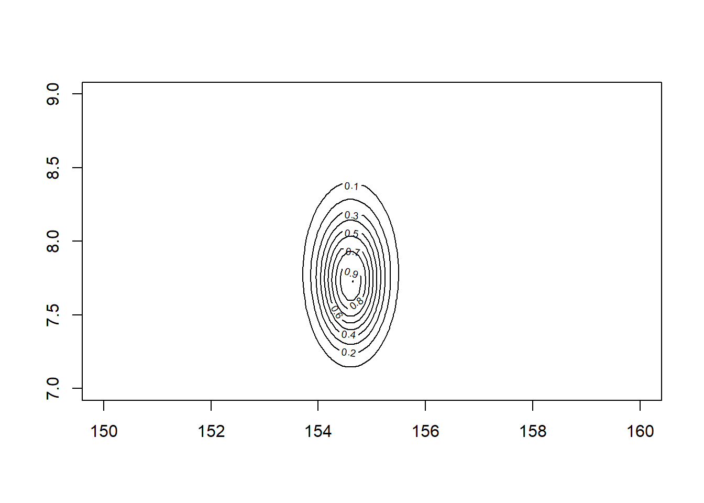
## [1] "Heatmap"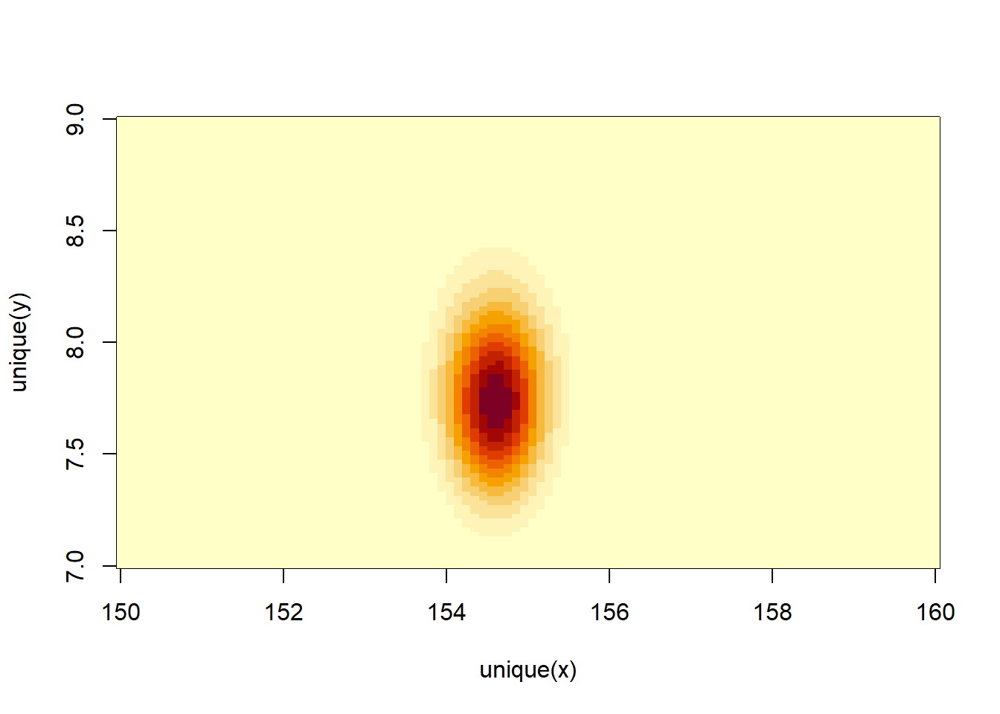 #### Sampling from the posterior
# sampling rows based on posterior
sample.rows <- sample(1:nrow(post), size = 1e4, replace = T, prob = post$prob)
# retrieve parameter values
sample.mu <- post$mu[sample.rows]
sample.sigma <- post$sigma[sample.rows]
plot(sample.mu, sample.sigma, cex = 0.5, pch = 16, col = col.alpha(rangi2,0.1))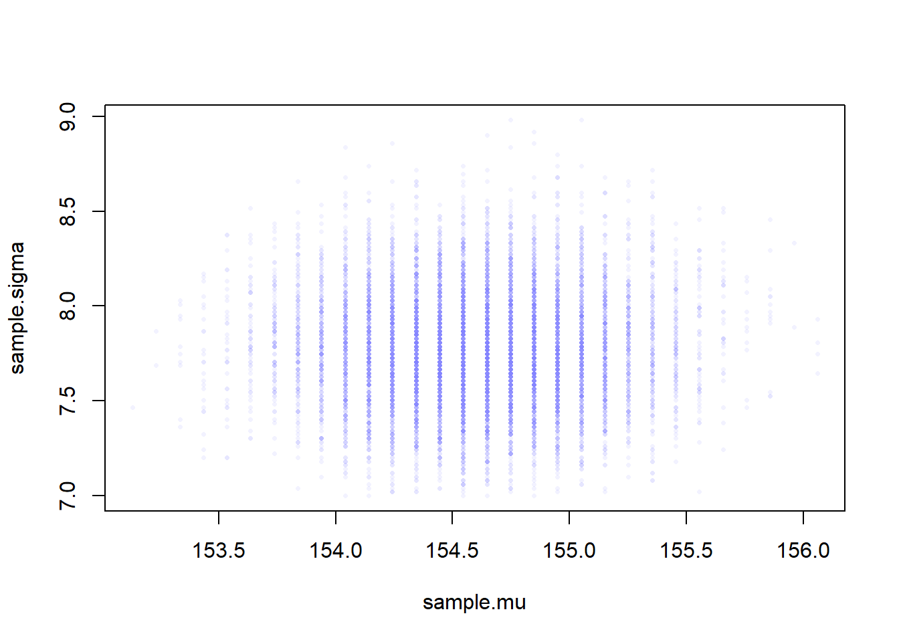
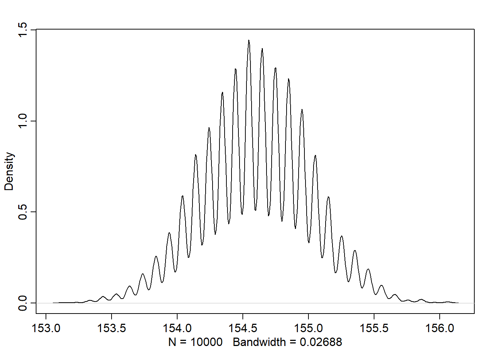
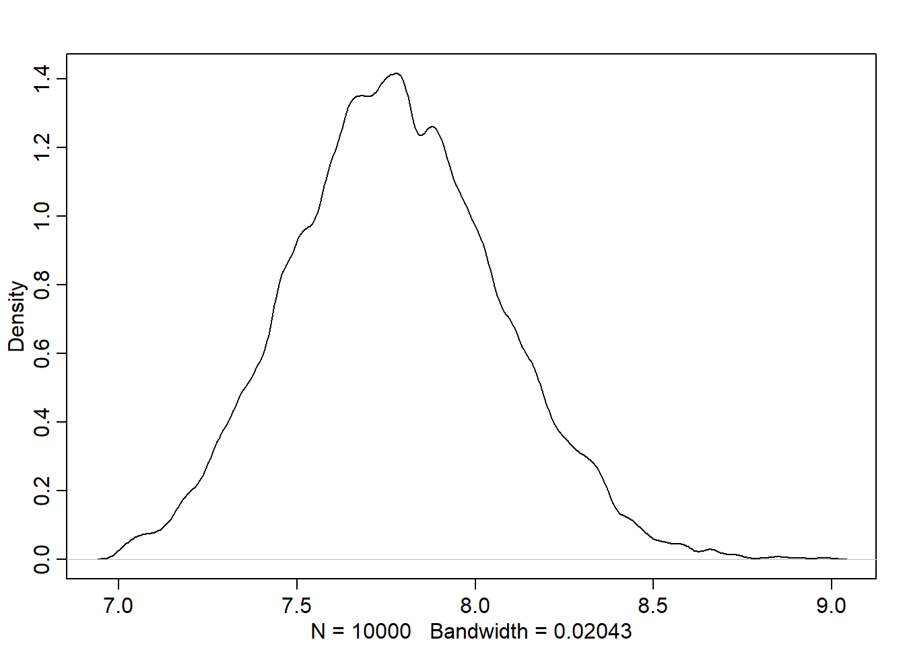
## 5% 94%
## 153.9394 155.2525## 5% 94%
## 7.323232 8.2525252.0.0.2 Using the quadratic approximation
flist <- alist(
height ~ dnorm(mu, sigma),
mu ~ dnorm(178,20),
sigma ~ dunif(0,50)
)
m4.1 <- quap(flist, data = d2)
precis(m4.1)## mean sd 5.5% 94.5%
## mu 154.60699 0.4119786 153.948567 155.265410
## sigma 7.73103 0.2913575 7.265385 8.196676quap estimates posterior distribution by approximation. It needs a start point to start the gradient procedure, which will be chosen at random from the prior if start values are not specified. Use alist when defining a list of formulas because alist does not evaluate terms in the list.
2.0.0.3 Using quadratic approximation with a more informative prior
m4.2 <- quap(
alist(
height ~ dnorm(mu, sigma),
mu ~ dnorm(178, 0.1),
sigma ~ dunif(0,50)
), data = d2
)
precis(m4.2)## mean sd 5.5% 94.5%
## mu 177.86375 0.1002354 177.70356 178.02395
## sigma 24.51756 0.9289228 23.03296 26.002152.0.0.4 Sampling from quap
## mean sd 5.5% 94.5%
## mu 154.610693 0.4151809 153.946644 155.277104
## sigma 7.732226 0.2922737 7.259823 8.193751
## histogram
## mu <U+2581><U+2581><U+2585><U+2587><U+2582><U+2581><U+2581>
## sigma <U+2581><U+2581><U+2581><U+2581><U+2582><U+2585><U+2587><U+2587><U+2583><U+2581><U+2581><U+2581>2.0.0.5 Linear prediction
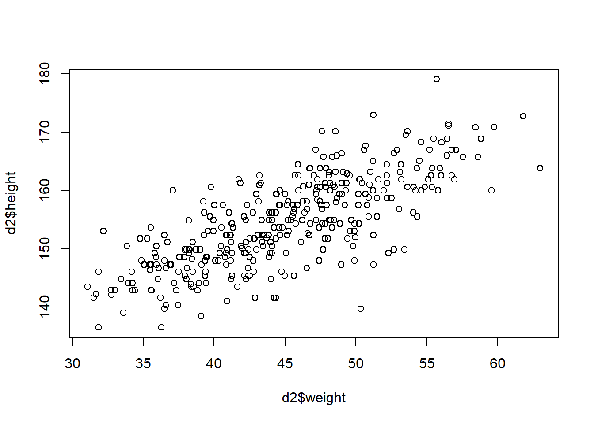 Simulating to get the prior.
N <- 100
a <- rnorm(N, 178, 20)
b <- rnorm(N, 0, 10)
b2 <- rlnorm(N, 0, 1)
xbar <- mean(d2$weight)
print("Getting the normal prior")## [1] "Getting the normal prior"plot(NULL, xlim = range(d2$weight), ylim = c(-100,400))
for (i in 1:N){
curve(a[i] + b[i]*(x - xbar), from = min(d2$weight),
to=max(d2$weight),add = TRUE)
}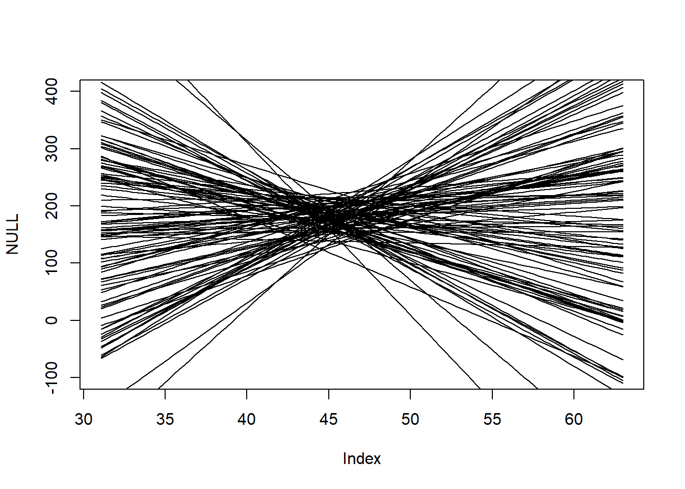
## [1] "Getting the log-normal prior"plot(NULL, xlim = range(d2$weight), ylim = c(-100,400))
for (i in 1:N){
curve(a[i] + b2[i]*(x - xbar), from = min(d2$weight),
to=max(d2$weight),add = TRUE)
}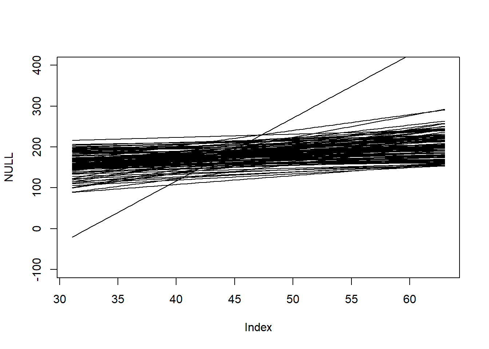
We fuss about priors for two reasons:
1. There are many analyses in which no amount of data makes the prior irrelevant. Non Bayesian methods also depend on such structural assumptions and are no better off.
2. Second, thinking about priors helps us develop better models, maybe even eventually going beyond geocentricism.
Rethinking: What is the correct prior? People often assume that there is a uniquely correct prior, which is wrong. Priors can be wrong in the same way that a hammer can be wrong for building a table. There exists guidelines to chose priors. Priors encode data and information before seeing data. Priors allow us to see consequences of beginning with different information. We can use priors to discourage certain parameter values such as negative associations between height and weight. When we don’t know that much, we still now some information about the plausible range of values.
Rethinking: Prior predictive simulation and p-hacking If we choose to evaluate our choice of priors on observed data, that’s cheating. The procedure performed is to try to choose priors based on pre-data knowledge. We’re judging our choice of prior on general facts, not the sample.
Back to our regression model of weight and height which we have as: \[h_i \sim Normal(\mu_i, \sigma)\] \[\mu_i = \alpha + \beta(x_i - \bar{x})\] \[\alpha \sim Normal(178,20)\] \[\beta \sim Log-Normal(0,1)\] \[\sigma \sim Uniform(0,50)\] We can encode this to our model
2.0.0.6 Interpreting the posterior distribution
We can learn about our model results either via tables or via simulation plotting. Tables aren’t too great, however, at understanding complex models. In this book we’re going to focus on plotting the posterior distributions and posterior predictions.
Rethinking: What do parameters mean? The perspective of this book is: *Posterior probabilities of parameter values describe the relative compatiability of different states of the world with the data, according to the model.
First, let’s observe a table of marginals
## mean sd 5.5% 94.5%
## a 154.6013677 0.27030763 154.1693639 155.033372
## b 0.9032809 0.04192363 0.8362788 0.970283
## sigma 5.0718804 0.19115474 4.7663782 5.377383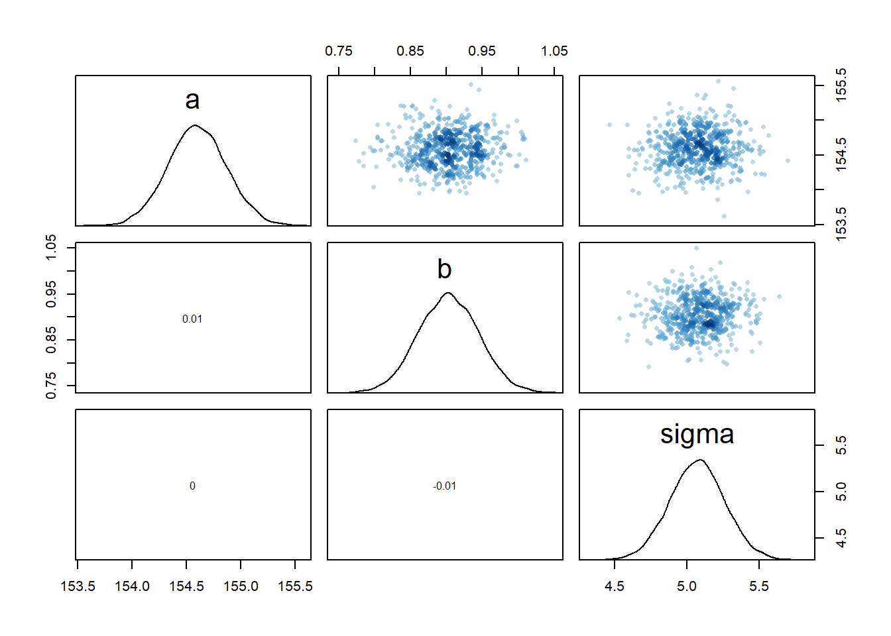
Plotting the posterior distribution against the data can provide an informal check on assumptions. But more importantly it provides a way to interpret the posterior, especially as models get complicated with interactions and non-linear terms.
plot(height ~ weight, data = d2, col = rangi2)
post <- extract.samples(m4.3)
a_map <- mean(post$a)
b_map <- mean(post$b)
curve(a_map + b_map*(x - xbar), add = T)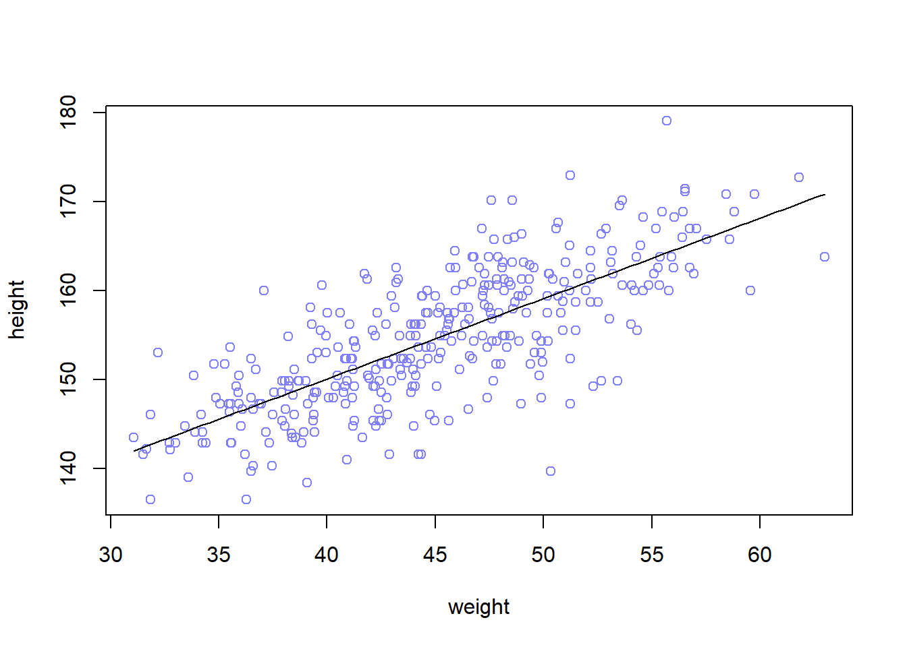
The line we just draw is the posterior mean line and does not capture the uncertainty of the estimates. We can do so by plotting multiple regression lines.
post <- extract.samples(m4.3, n=100)
plot(d2$weight, d2$height, xlim = range(d2$weight), ylim = range(d2$height), col = rangi2,
xlab = "Weight", ylab = "Height")
for (i in 1:nrow(post)){
curve(post$a[i] + post$b[i]*(x - mean(d2$weight)), col = col.alpha("black", 0.3), add = T)
}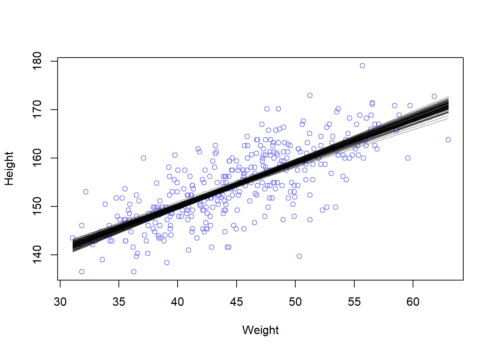
The uncertainty decreases as we increase the sample size. Since \(\mu\) is a combination of random variables with distributions, \(\mu\) has a distribution. For every value of \(x\) weight, we can get all possible values of \(\mu\) as a joint distribution of values of \(\alpha\) and \(\beta\). This distribution incorporates both the individual variabilities of \(\alpha\) and \(\beta\) as well as any correlation between the variables (joint Gaussian distribution). We can construct an interval for values of height at each values of weight according to our posterior distribution. If we do so for every point of weight in the sample, we can conduct a confidence band for our regression model.
weight.seq <- seq(25, 70, 1)
mu <- link(m4.3, data = data.frame(weight = weight.seq))
str(mu) # This samples from the posterior of height for each value in weight.seq from the model ## num [1:1000, 1:46] 135 137 137 137 137 ...plot(height ~ weight, d2, type = "n")
for(i in 1:100){
points(weight.seq, mu[i,], pch = 16, col = col.alpha(rangi2,0.1))
}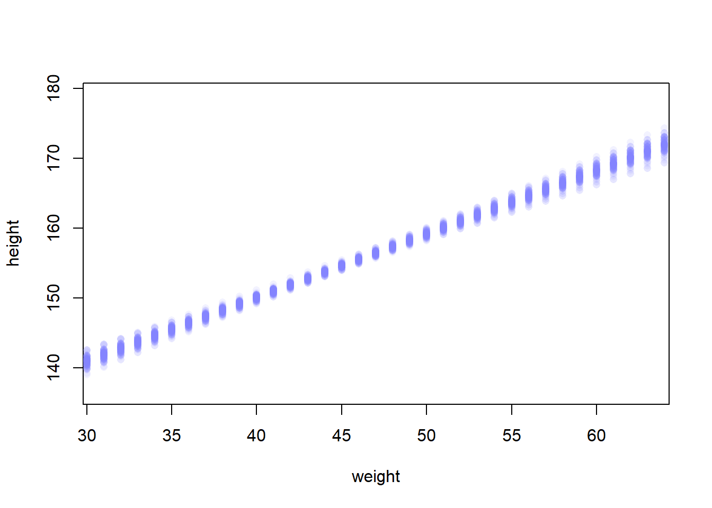
We can summarize the posterior distribution as interval estimates and the mean
mu.mean <- apply(mu, 2, mean)
mu.PI <- apply(mu, 2, PI, prob = 0.89)
plot(height~weight, data = d2, col = col.alpha(rangi2, 0.5))
lines(weight.seq, mu.mean)
shade(mu.PI, weight.seq)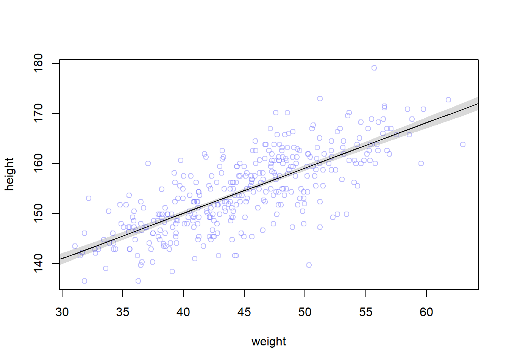
These intervals are great but they’re very tight around the posterior mean (MAP). This is because the inferences are always conditional on the model. Even bad models can have tight compatibility intervals. In other words, this line can be thought of as “conditional on the assumption that height and weight are linearly related by a straight line, then this is the most plausible line”
Some ways we can generate predictions and posterior from a fitted model:
(1) Use a function (in this case link) to generate distributions of posterior values for your parameter \(\mu\) for each combination of values from your predictors of interest (in this case, weight).
(2) Use summary functions like mean and PI to find averages and lower and upper bounds for \(\mu\) for each value of the predictor variable
(3) Use plotting functionality to draw lines and intervals with respect to the real data.
2.0.0.7 Prediction intervals
The goal of the model in the prediction sense is not to estimate the average height but more specific heights. The way to do it is: for any unique weight value, you can sample from a Gaussian distribution with the correct mean for that weight, using the value of sigma sampled from the sample posterior distribution. If you do this for every sample from the posterior and every weight value, you can get estimates that incorporates both the uncertainty of the Gaussian distribution, as well as the uncertainty of the posterior.
sim.height <- sim(m4.3, data = list(weight = weight.seq))
height.PI <- apply(sim.height, 2, PI, prob = 0.89)
mu.HPDI <- apply(mu, 2, HPDI, prob = 0.89)
plot(height ~ weight, d2, col = col.alpha(rangi2, 0.5))
lines(weight.seq, mu.mean)
shade(mu.HPDI, weight.seq)
shade(height.PI, weight.seq)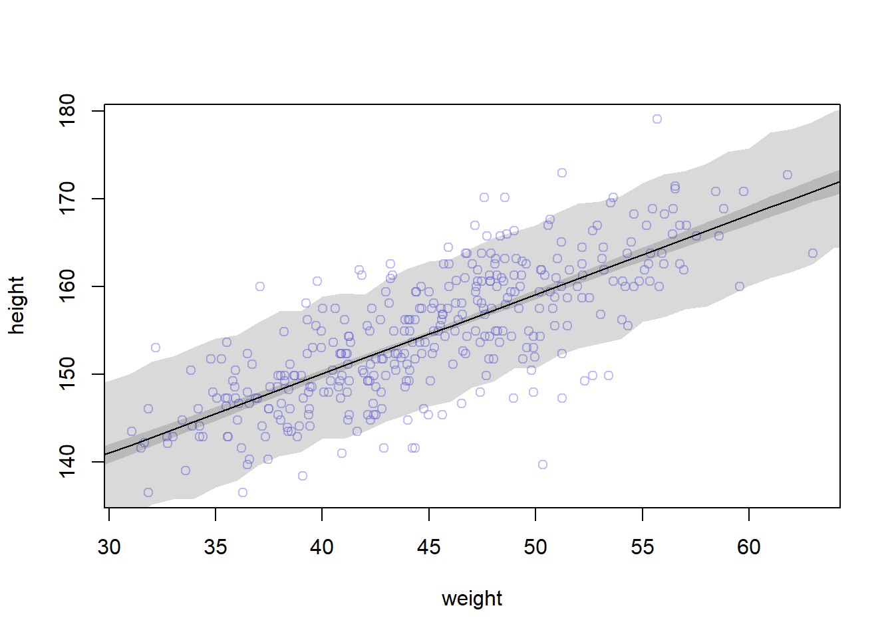
2.0.1 4.5 Curve from lines
Here we consider two methods to build curves into our regression. The first is polynomial regression and the second is b-splines.
#### Polynomial regression
Polynomial regression uses powers of a variable (such as cubes and squares) as extra predictors to build in curvature to the association function.
Before we start we should start standardizing our variables, which is a common approach. This will ensure that we don’t have numerical glitches due to large (or small) numbers, as squares and cubes of variables can be very huge. This should be default behavior. Let’s define a parabola model on the height vs weight example that we see:
[
h_i Normal(_i, ) \
_i = + _1 x_i + _2 x_i^2 \ Normal(178,20) \ _1 LogNormal(0,1) \ _2 Normal(0,1) \ Uniform(0,50) \ ] Let’s build a model using this new formulation
d$weight_s <- (d$weight - mean(d$weight))/sd(d$weight)
d$weight_s2 <- d$weight_s^2
m4.5 <- quap(
alist(
height ~ dnorm(mu, sigma),
mu <- a + b1*weight_s + b2*weight_s2,
a ~ dnorm(178,20),
b1 ~ dlnorm(0,1),
b2 ~ dnorm(0,1),
sigma ~ dunif(0,50)
), data = d
)
precis(m4.5)## mean sd 5.5% 94.5%
## a 146.058849 0.3689489 145.469198 146.648501
## b1 21.732522 0.2888719 21.270849 22.194195
## b2 -7.804178 0.2741637 -8.242345 -7.366011
## sigma 5.774166 0.1764407 5.492179 6.056152It’s difficult to interpret these polynomial models. \(\beta_1\) and \(\beta_2\) are square and linear components of the regression, and \(\alpha\) is still the intercept but we still don’t know what it means. Since this is a polynomial regression, it also doesn’t guarantee that we’re regressing to the mean of heights either. Let’s plot these things out.
weight_seq <- seq(from = -2.2, 2, length.out = 30)
pred_dat <- list(weight_s = weight_seq, weight_s2 = weight_seq^2)
mu <- link(m4.5, data = pred_dat)
mu.mean <- apply(mu,2,mean)
mu.HPDI <- apply(mu, 2, HPDI, prob = 0.89)
height_sim <- sim(m4.5, data = pred_dat)
height.PI <- apply(height_sim, 2, PI, prob = 0.89)
plot(height ~ weight_s, d, col = col.alpha(rangi2, 0.5))
lines(weight_seq, mu.mean)
shade(mu.HPDI, weight_seq)
shade(height.PI, weight_seq)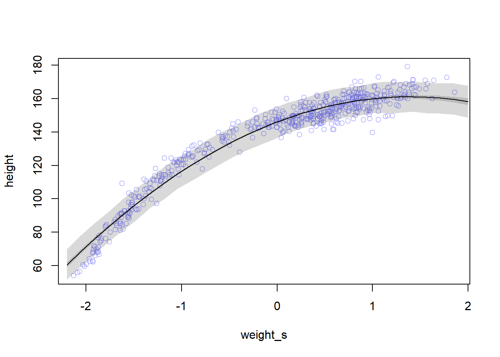
We can add a third degree polynomial term to get a cubic model. However, these models don’t really have explanations as to what they mean, and can actually lead to overfitting.
Rethinking: Linear, additive, funky These models are still linear models even though they are cubic and square terms with non-straight curve. The word “linear” mean different things in different contexts. In this context, the word “linear” here means that \(\mu_i\) is a linear function of any single parameter. In other words, \(\mu_i\) is linear with respect to \(x\) and \(x^2\) individually, but the combination of terms makes it non-linear.
2.0.1.1 Splines
The second way to introduce a curve is through a spline. The word spline is a smooth function built out of smaller component piece-wise linear functions. The B-Spline we’ll look at here is commonplace. B here stands for “basis”, which means “component”.
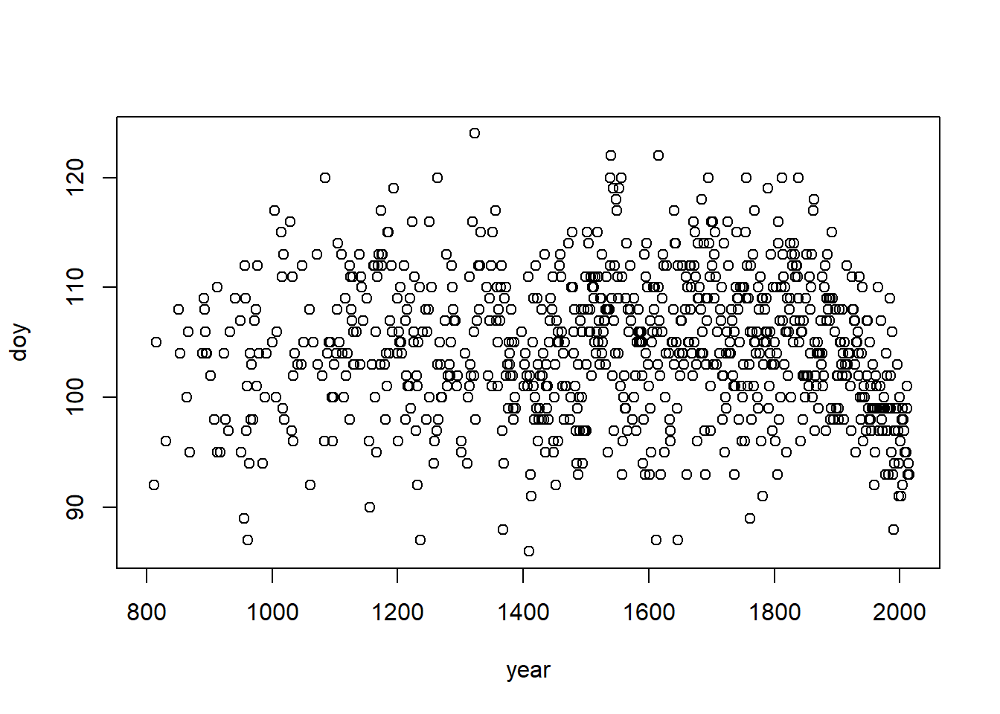
There are many ways you can construct basis functions. Some general ideas:
(1) First, you define “knots” in your data where basis functions completely transform from one basis to another.
(2) Then, you can define how many basis you can choose, depends usually on the number of knots.
(3) The basis functions are supposed to smooth out transitions between knotted sections, and generally no more than two basis functions have an “influence” (non-zero weight) for any point in the predictor variable. This gives splines a “local” effect where locally only one or two parameter has an effect, as supposed to polynomial regression where the slope has an impact across the entire regression.
(4) You can increase the complexity and flexibility of the model by adding more knots or even use higher degree polynomials.
Come back to our idea